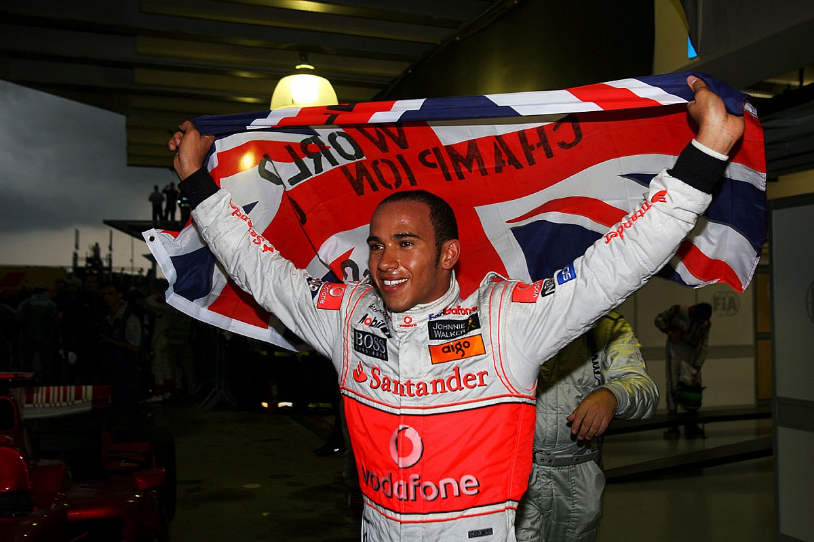

.png)
Lewis Hamilton – The Hammer
Lewis Hamilton è uno dei più grandi piloti nella storia della Formula 1. Nato a Stevenage, Inghilterra, ha debuttato in F1 nel 2007 con la McLaren, sorprendendo il mondo con il suo talento puro. È diventato sette volte campione del mondo, eguagliando il record di Michael Schumacher. Oltre alle sue imprese sportive, è noto per il suo attivismo sociale, stile inconfondibile e impatto culturale globale.
I Titoli Mondiali di Hamilton
2008: Hamilton vince il suo primo titolo con McLaren in una delle finali più pazze della F1.
Il primo titolo arriva nel 2008 con la McLaren, grazie al celebre sorpasso su Glock all’ultima curva dell’ultimo giro in Brasile. A soli 23 anni, diventa il più giovane campione del mondo dell’epoca.

2014: Inizia il dominio Mercedes. Lewis conquista il secondo titolo.
Dal 2014 al 2020, Hamilton domina con la Mercedes nell’era ibrida. Vince i titoli nel 2014, 2015, 2017, 2018, 2019 e 2020, imponendosi come il pilota più vincente della generazione moderna. Il 2020 è un anno storico: raggiunge 7 titoli e batte il record assoluto di vittorie in carriera.
Oltre la F1

Hamilton è anche una figura globale della cultura e dell'attivismo.
Lewis ha usato la sua piattaforma per promuovere la diversità, sostenere cause ambientali e difendere i diritti umani. È anche stilista, musicista e ambasciatore per numerosi marchi internazionali. Ha portato un nuovo pubblico alla Formula 1.
Il Futuro e le Sfide
Dopo un 2021 intenso e una controversa sconfitta ad Abu Dhabi, Hamilton è rimasto concentrato sul ritorno al vertice. Nel 2025 passerà alla Ferrari, un evento storico che potrebbe scrivere un nuovo capitolo nella sua leggendaria carriera.
Caschi Iconici di Lewis Hamilton
2020 – Casco nero in onore del movimento Black Lives Matter
2021 – Design viola con accenti fluo, simbolo della sua identità
2018 – Casco oro e bianco celebrativo per il quinto titolo